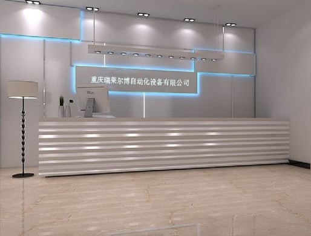

重庆瑞莱尔博自动化设备有限公司位于重庆市南岸区中心地段。致力于轨道交通、工业自动化、高等院校等领域。是集产品开发、生产、销售、为一体的高科技企业。具有较强的生产能力。公司全部员工均具有大专以上学历，开发部具有很强的开发能力，并与国内多家企业合作开发多种产品。同时公司与国内高校也有技术交流与合作。不断完善公司所生产的各种产品，并力争走在技术前沿。
公司生产部、售后服务部均是从事电子行业多年的员工有丰富的生产、调试、售后维修经验。并已形成一定的规模优势。
销售部是由十几名朝气蓬勃的具有一定技术水平的年轻人组成，他们常年奔波在用户中间，及时准确的反馈用户的要求，及时解决用户的难题，成为用户可以信赖的朋友。
公司定位于研发一流技术，生产一流产品，推出一流服务，并大力拓展在全国各地的办事处，向广大用户提供优质产品和服务。
公司生产的产品广泛用于电力、轨道交通、高等院校等行业。公司以“智能·安全·高效·稳定”的战略为先导，创造更高质量的自动化系统、新型仪器，完善已有的成熟产品，严格管理，稳定生产高质量产品，并坚持“质量第一、以质取胜”的方针，同时以雄厚的技术力量和超前意识，构筑专业生产品质。